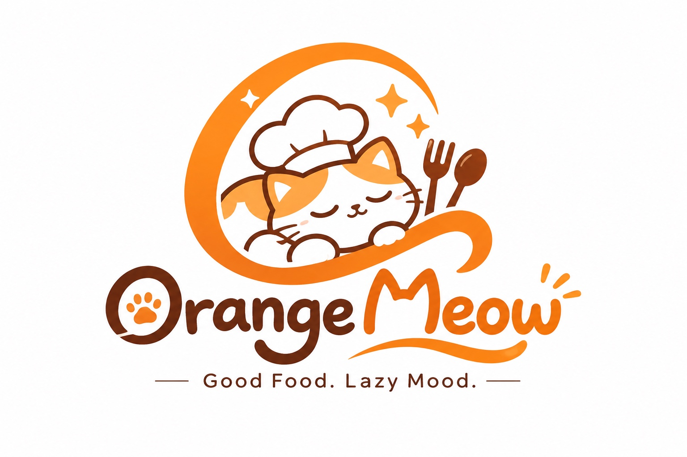

Good food, lazy mood吃得開心 ・ 慢慢生活 ・ 保持好奇
01 / THE EDITOR'S PICK
本日推薦
02 / FRESHLY SERVED
最新日記
原型示範內容，非正式發布文章。
正在連接 Blogger；目前顯示示範內容。
03 / THROUGH MY LENS
生活相簿
04 / BEHIND THE MEOW
關於橘貓
這裡是 Orange Meow，一個收藏美食、生活與探索的小角落。
前往原本的部落格 ↗
Good food, lazy mood原型示範內容，非正式發布文章。
正在連接 Blogger；目前顯示示範內容。
這裡是 Orange Meow，一個收藏美食、生活與探索的小角落。
前往原本的部落格 ↗